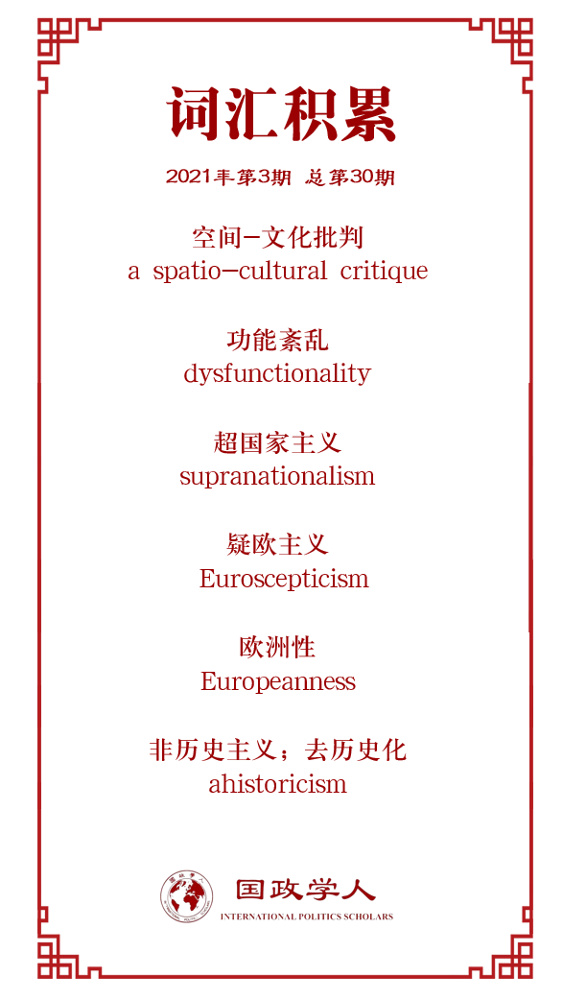

收录于合集

作品简介
【作者】 安德鲁·格伦克罗斯(Andrew Glencross)，英国阿斯顿大学政治与国际关系学院高级讲师，外交政策研究所高级研究员，同时兼任欧洲政治研究联盟出版社(European Consortium for Political Research Press)副主编。主要研究领域包括欧洲一体化、欧盟内部法律和政治的相互作用和英国脱欧。
【编译】 李月云（国政学人编译员，中国人民大学外交学专业硕士研究生）
【校对】 姚寰宇
【审核】 李博轩
【排版】 高辉
【美编 】马颖
【来源】 Glencross, Andrew. “‘Love Europe, Hate the EU’: A Genealogical Inquiry into Populists’ Spatio-Cultural Critique of the European Union and Its Consequences.” European Journal of International Relations , vol. 26, no. 1, Mar. 2020, pp. 116–136, doi:10.1177/1354066119850242.
【归档】 《国际关系前沿》2021年第3期，总第30期。
期刊简介
European Journal of International Relations,《欧洲国际关系杂志》（EJIR）是欧洲政治研究联盟国际关系常设小组（the Standing Group on International Relations of the European Consortium for Political Research, SGIR）的同行评审旗舰期刊, 由SGIR和欧洲国际研究协会组成的联合委员会共同管理。根据Journal Citation Reports显示，2019年该期刊的影响因子为3.474。
“爱欧洲，恨欧盟”：民粹主义者对欧盟的空间-文化批判及其后果
**** ‘Love Europe, Hate the EU’: A Genealogical Inquiry into Populists’ Spatio-Cultural Critique of the European Union and Its Consequences ****
Andrew Glencross
文章导读
“Love Europe, Hate the EU”这一对欧盟的空间- 文化批判，对有关欧洲一体化的争论产生了重要影响，与英国脱欧密切相关，且流行于其他反对欧盟的民粹主义运动中。此外，该流行用语还被认为是有关欧洲是否具有政治意义的最新争论。在此背景下，本文主要就这一表述的历史演变谱系进行了分析。文章认为，之所以想废除以规则为基础的制度秩序，是源于一种对主权国家兴起后欧洲国家间关系的“去历史”解读。欧洲在18世纪末被概念化为一个独特的政治单位，有其自身特有的功能失调，即一个经常导致暴力冲突的、天然的反霸权秩序，这一点被忽视了。这一批评寄期望于欧洲共同的利益和价值观能够不断地促成主权国家间的合作，但关于这一期望的争论最后导致了英国脱离欧盟。正如未来英欧关系的讨论所展示的那样，这一对欧洲共同性文化和理想化的理解没有注意到边界所蕴含的政治和经济意义，忽略了欧盟在管理争议地区中所扮演的角色。对欧盟的制度和文化认识所涌现出来的差异，实则意味着经历英国脱欧后的欧洲一体化需要像重视自己作为超国家主义的文化象征那样，集中展示自身制度合作的价值。
01
引言
1988年英国时任首相撒切尔在布鲁日的演讲向公众展示了其对于欧洲一体化的疑虑，直至今日，该演讲仍然被认为是对欧盟“超级国家”（super- state）侵犯国家主权的热血捍卫。然而，她对欧洲一体化的敌意表现在定义欧洲的实际组成部分以及谁将掌控这个所谓的定义方面。2016年英国公投脱离欧盟也显示了同样的逻辑。
追溯“欧洲”概念背后的政治谱系对于理解当代反欧洲一体化的民粹运动的本质和影响十分必要的，而之所以就未来英欧关系的辩论进行分析，是为了说明英国希望退出欧盟重获主权的同时又希望欧洲共同的价值观和利益能够解决分歧之间的内在矛盾。因此，有关欧洲定义的政治争论需要被作为当代欧洲一体化的研究对象来严肃对待。
本文主要由四个部分组成。第一部分涉及“什么是欧洲”的基本问题，这个问题的答案很大程度上是由自现代早期以来的国家间互动决定的。第二部分探讨了欧盟和欧洲之间高度政治化的差别。这种差别的区分对于欧洲是共同价值观的来源这一理念至关重要，因为这意味着民族国家之间的合作无需求助于欧盟本身。第三部分讨论了经济和政治边界的重要意义。然而在有关未来英欧关系的辩论中，欧盟的反对者忽略了边界除阻挡移民之外的重要作用。第四部分（结语部分）从国家间关系的角度反思了欧洲独特的历史，以及欧洲公民观和文化观之间的关系对当前欧盟秩序的影响。
02
什么是欧洲？有争议的含义和国家间关系
欧洲既是一个地理的概念，也是一个具有价值取向的概念。由于欧洲是由共同的政治秩序而非共同的基督教文化来定义的，主权国家与泛欧机构之间的关系是互补的。当代关于欧洲认同的学术研究指向的是包容性和排他性民族主义之间的冲突，这分别取决于欧盟和民族国家的文化认同。然而，欧洲最初的政治定义不能以这种相互排斥的方式表达。从历史上来说，欧洲作为一个集体的政治身份，是作为一个需要制度来管理主权国家之间竞争的负面影响的空间而出现的。因此，这种对欧洲政治认同起源的分析为探索欧洲与欧洲民族国家共同构成的有争议的中间地带奠定了基础。
因此，对欧洲的定义起初就是政治的，在这种意义上，欧洲国家就是政治体系的一部分，体系的规则、法律和权利对公民国家的日常生活产生影响。欧洲的这种公民概念先于对身份的文化理解，这种理解既可以支持也可以反对泛欧洲法律政治制度的发展。相比之下，当代欧洲政治见证了欧洲文化定义的兴起，这表明没有共同的政治制度也能实现合作。“爱欧洲，恨欧盟”这个口号用民粹主义的道德语言表达了一种想象中的文化共同体，来作为有缺陷的公民共同体的更好替代。欧洲怀疑论者认为，欧洲各国可以在共同规范或利益支持下的自愿联合基础上，成功地进行互动。这种观点与后文探讨的欧洲政治定义的谱系存在根本性冲突。
03
离开欧盟而不是离开欧洲：一个替代公民共同体的文化共同体？
这一部分探讨了欧洲文化叙述和空间叙述的由来，作为一种反对欧盟的形式，这两种叙事在英国脱欧以及其他民粹主义运动中都得到了发展。英国政府认为，英国只是离开欧盟，而不是在文化乃至政治上脱离欧洲大陆的其它地区。在英国脱欧的背景下，持欧洲怀疑论的民粹主义者创造了一种道德化的叙述，试图将欧洲和欧洲性的概念与与欧盟的联系分开。这种空间- 文化批判反对欧盟使用地理表达作为有争议的体制结构的同义词。
这种批判不顾历史事实，忽略了在缺乏共同的政治制度的情况下欧洲有关功能的失调。为了充分理解这种新兴的空间- 文化差异，有必要研究欧盟领导人的主张，即欧盟代表着一个重叠的文化和公民共同体，将欧洲想象成一个文化共同体，忽略了民间机构对管理主权和边界未决问题的潜在贡献，忘记了领土有限的国家之间激烈的经济和政治竞争的历史，拒绝认同欧盟及其特定公民社区的利益。这样的举动无论是在领土方面，还是在欧洲公民社会应该如何运作方面，都潜在地限制了欧洲身份的包容性。
随着欧盟成员国身份的限制，尤其是欧元区规则变得越来越明显，围绕欧盟的欧洲身份认同的吸引力可能变得越来越有争议,其结果是对欧洲的文化理解和公民理解之间的冲突，二者都建立在围绕主权和对边界空间控制的不同历史叙述之上。所有这些紧张关系在英国脱欧谈判中达到了顶峰，在谈判中，英国退出欧盟的支持者通过呼吁一种共同的欧洲文化寻求替代边境安排，与此同时，欧盟感到不得不捍卫其公民身份的排他性。
04
“不能承受之轻”：(被遗忘的)边界是空间-文化批判的结果
在2016年英国是否退出欧盟的公投中，边界主权是一个关键变量。支持英国脱欧的选民显然仍依赖于一种民族认同感，这种认同感表现为管理特定领土的能力。然而，在脱欧正式谈判的前18个月里，英国政府对政治和经济边界上表现出了极其矛盾的态度，尽管英国的欧洲怀疑论者多年来一直指责欧盟限制其主权，但英国退出欧盟的战略却奇怪地对英国脱欧后的英欧边界毫不在意。另一方面，欧盟又坚持澄清边界的政治经济作用，而不愿通过更灵活的安排来满足英国的要求。因此，对欧盟的空间- 文化批判刻意忽略了边界的持久意义。通过这种方式，英国退欧谈判中的固有问题被抛之脑后，因为一个拥有共同价值观的欧洲可以复制欧盟所取得的成就，而不用受其政治法律机构的限制。其结果是对峙，英国坚持一个文化共同体应该能够复制公民共同体的好处，而欧盟则坚决捍卫其公民身份。
05
****结语
英国脱欧给经济和政治边界带来了新的关注和意义，这并非巧合，这些边界的存在已经开始成为外交上的事后考虑。在一个集合主权体系中，欧洲边界的重要性会小的多，因为这种体系排除了基于民族对个人或公司的歧视。本文所进行的谱系学探索表明，对于欧洲认同的空间- 文化分歧是基于一种故意低估公民机构对稳定欧洲国家间关系的贡献的历史叙事。英国脱欧表明，在不受制度结构约束的情况下，希望从一体化中获益的方式，取决于对欧洲历史的某种非历史性理解。“这种非历史主义是可能的”的事实非常具有启发性，突出了分析方法在理解民粹主义、历史想象力和欧洲相互竞争的思想之间的关系上的优点。
最后，“没有欧盟参与的欧洲合作”这种不顾历史事实的叙事，暗示了欧盟独特制度架构背后的理由未能得到沟通，英国脱欧或许是弥补这种失败的一个机会。然而，目前尚不清楚的是，欧盟作为解决国家间竞争所必需的公民共同体的辩护本身是否足以克服民粹主义者所提出的空间- 文化批判。相反，欧盟可能不得不利用对立的欧洲文化理解的强大吸引力。与其简单地驳斥，欧盟或许更应该从这些相互对立的文化观念中学习，重塑其公民社会。
译者评述
近年来，欧债危机、难民危机和乌克兰危机已经严重削弱了欧盟的凝聚力，2016年6月23日英国公投脱欧又给予了欧盟有史以来最沉重的打击，欧盟首次有成员国退出，削弱了欧盟的实力、影响力和向心力。自2016年以来，英国就与欧盟就“脱欧”协议进行了多轮谈判。在经历了近4年拖沓程序，两任首相离职后，双方终于在2020年1月完成相关手续，进入了为期11个月的过渡期。2020年12月24日，经过多轮激烈谈判，欧盟与英国就包括贸易在内的一系列合作关系达成协议，为英国按照原计划在2020年结束“脱欧”过渡期扫清障碍。
本文从欧洲认同的角度切入，就“爱欧洲，不爱欧盟”这一表述进行谱系调查，然后通过英国脱欧这一案例进行了具体的分析。作者首先强调了“爱欧洲，恨欧盟”是对欧盟的一种空间和文化的批判，这种批判在关于欧洲一体化的争论中具有重要影响，与英国脱欧密切相关。通过对这一表述的深入探究，作者发现，欧洲的政治意义先于其文化意义，它是公民共同体和文化共同体的结合，但首先是公民共同体。关于一体化的争论、对欧盟的批判以及英国脱欧等民粹主义运动都只看到了欧洲的文化意义，寄希望于欧洲文化上的亲近和共同的经济利益足以在没有制度约束的条件下促成欧洲国家间的合作，这种认识没有顾及到欧盟过去在协调国家间纠纷中所做出的贡献，是一种“去历史”的解读。最后，作者认为欧盟应该更多地向其成员展示自身在促进制度合作上的重要价值。
在关于欧洲未来的讨论中，“认同”已经成为了一个使用频繁的关键词，欧洲认同对于欧洲的政治一体化的发展具有重要意义。正是在具备这种意识的基础上，欧盟从内至外地努力建构这种认同，但欧洲一体化的进程一直是由精英驱动，在政治上远离欧洲公民，从一体化之初，欧盟就长期受到有关其“民主赤字”和民主合法性的批评和质疑，认为欧盟仅仅代表了欧洲政府和没有代表欧洲人民。此外，欧洲集体认同与各成员国的民族认同之间还存在着深刻的矛盾，欧盟一体化进程中所遇到的各种问题几乎都可以通过这种矛盾来解释。随着欧盟的不断扩大，欧洲集体认同的建构面临着诸多阻力。
参考文献
[1]李明明.试析一体化进程中的欧洲认同[J].现代国际关系,2003(07):19-23.
[2]邱芝.论欧洲一体化进程中集体认同的建构[J].世界经济与政治论坛,2007(04):120-124.
词汇整理

文章观点不代表本平台观点，本平台评译分享的文章均出于专业学习之用, 不以任何盈利为目的，内容主要呈现对原文的介绍，原文内容请通过各高校购买的数据库自行下载。
好好学习，天天“在看”
国政学人
支持学术公益与知识传播
微信扫一扫赞赏作者 __赞赏
已喜欢，对作者说句悄悄话
取消 __
发送给作者
发送
最多40字，当前共字
上一页 1/3 下一页
长按二维码向我转账
支持学术公益与知识传播
受苹果公司新规定影响，微信 iOS 版的赞赏功能被关闭，可通过二维码转账支持公众号。